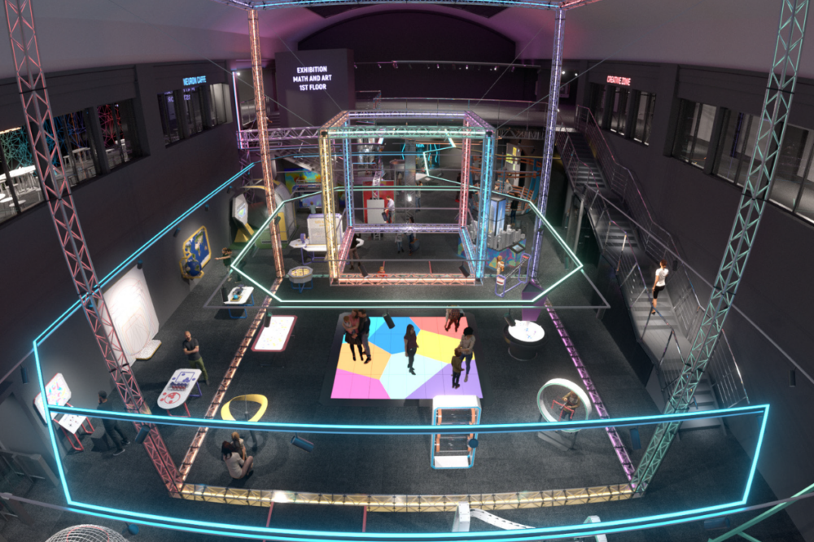

Theirworld’s ambitious projects to support education for Ukrainian children have received some fantastic media coverage. On the second anniversary of the full Russian invasion, we announced that we’re working with the Ukrainian government on a Museum of Mathematics and a national early years programme. Theirworld Chair Sarah Brown was interviewed by 15 television and radio outlets throughout the day, including BBC News, Sky News, Times Radio, LBC Radio, BBC 5 Live and a host of BBC regional radio programmes. Our story also featured in more than 130 articles in newspapers and on news websites. Sarah said Theirworld’s support will give hope to the “children of Ukraine whose lives have been upended by the war”, which followed severe disruption to education during the Covid-19 pandemic.
She added: “War doesn’t just wreck lives, it wrecks education and children’s futures. Four years of interrupted learning have had a devastating impact on children’s attainment in mathematics, reading and writing.” Theirworld’s projects are part of a drive to help rebuild Ukraine. We are supporting the £5 million state-of-the-art Museum of Mathematics in Kyiv – only the fourth of its kind in the world – which is scheduled to open this year. The museum will deliver workshops, tutoring and teacher training. Although based in the capital, it will also feature a travelling exhibition to reach about 3,000 teachers and 300,000 children in rural and remote areas every year.
Theirworld is also working with the Ukrainian government on a national childhood education and development initiative to support children in the important first five years of a child’s life. Since the Russian invasion began in 2022, more than 100 early childhood schools have been destroyed and more than 1,000 damaged. Many are used as shelters for internally displaced people. Our support for education builds on Theirworld’s existing commitment to ensure students and teachers displaced by the war have access to digital devices to help them learn and teach remotely. We have helped to distribute more than 70,000 laptops to students and teachers in Ukraine and neighbouring host countries – an initiative that has reached an estimated 1.5 million learners via their teachers or directly.